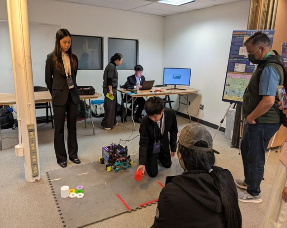
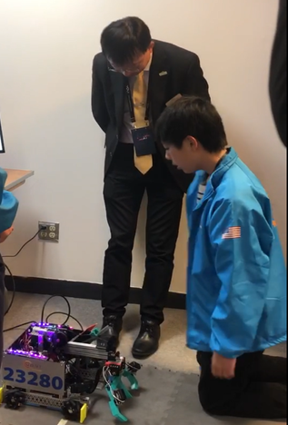
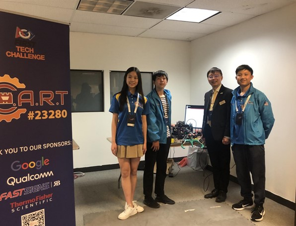
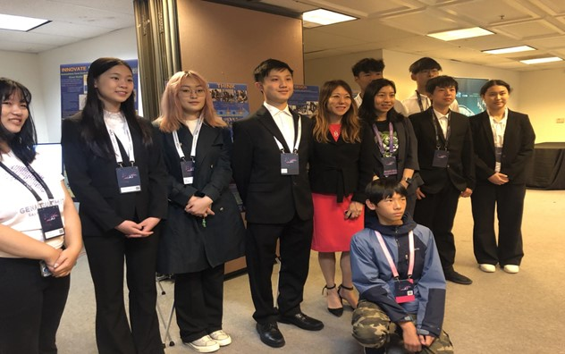
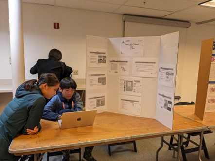
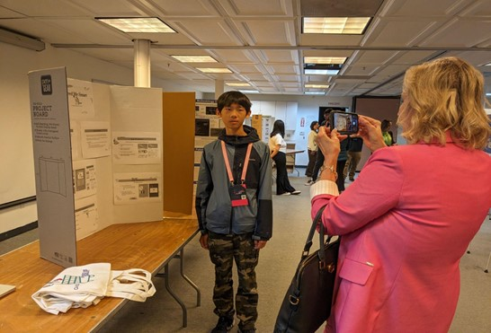
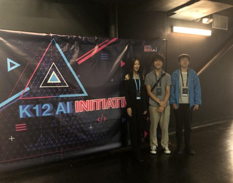

San Francisco, CA – May 29-31, 2024 – The members of the ESC Club proudly attended the GEN AI Summit K12 Panel, bringing with them their innovative robotics project and the award-winning app “Feed Me Smart.” This prestigious event, held in San Francisco, aimed to inspire K-12 students and provide them with a unique opportunity to experience the world of artificial intelligence (AI) firsthand.

Over the span of three days, the summit attracted over 4,000 in-person attendees from across the United States, including participants from Florida, New York, California, and many other states. The event proved to be a tremendous success, offering a vibrant platform for students, educators, and AI enthusiasts to connect, learn, and innovate.
The ESC Club showcased their robotics project
The ESC Club also demoed their app “Feed Me Smart,” which has gained recognition for its intelligent design and user-friendly interface. “Feed Me Smart” addresses the crucial issue of nutrition and food security by providing users with smart meal planning and food management solutions.

During the summit, ESC Club members had the honor of meeting several distinguished guests, including Fiona Ma, the State Treasurer of California and Yang Shao, the Vice Mayor of Fremont. These interactions provided valuable insights and encouragement for the young innovators, reinforcing the importance of their contributions to the field of AI.





The event was organized by GPT DAO, whose dedication to promoting AI education and innovation was evident throughout the summit. The collaboration between various stakeholders, including educators, industry leaders, and policymakers, highlighted the collective effort to advance AI literacy and foster a new generation of tech-savvy leaders.
The GEN AI Summit K12 Panel was not just an event; it was a celebration of creativity, collaboration, and the boundless possibilities that AI offers. The ESC Club members returned from the summit with renewed inspiration and a deeper understanding of the impact they can make in the world of AI.

For more information about the ESC Club and their projects, please visit https://escedu.org/
Contact Information: ESC Club Email: infoescedu@gmail.com